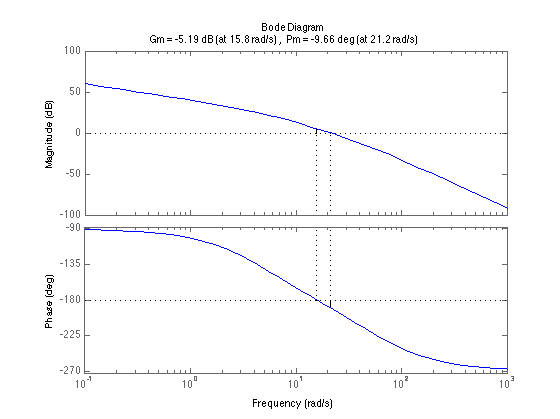
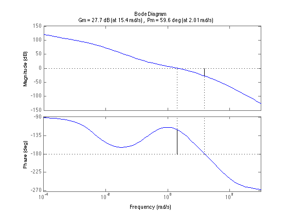
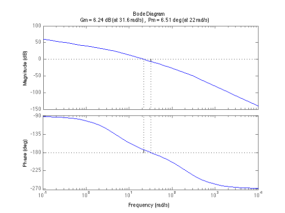
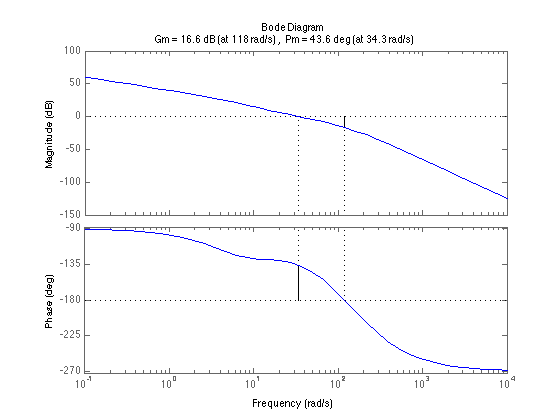

Homework 9
K = 100;
numG = [K];
denG = conv(conv([1/5 1], [1/50 1]), [1 0]);
G = tf(numG, denG);
wc = 2;
alpha = abs(100/(2*j*(.4*j+1)*(1/25*j+1)));
T = 9/wc;
numD = [T 1];
denD = [alpha*T 1];
D = tf(numD, denD);
figure;
margin(G)
figure;
margin(D*G);
% Part 6.50
K = 100;
numG = [K];
denG = conv(conv([1/5 1], [1/200 1]), [1 0]);
G = tf(numG, denG);
wc = 34.3;
alpha = 0.1716;
T = 1/(wc*sqrt(alpha));
numD = [T 1];
denD = [alpha*T 1];
D = tf(numD, denD);
figure;
margin(G);
figure;
margin(D*G);
   